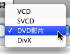
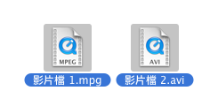
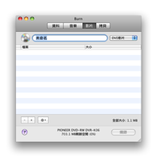
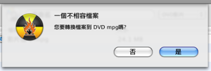

燒錄影片光碟:
Burn 可以建立4種類型的影片光碟. VCD 是第一種數位影片光碟格式. 之後是SVCD有較高的解析度. 然後是DVD-Video光碟是現在公用的分配數位影片.許多現在的DVD播放器可以播放 DivX 光碟. 這個特別的格式是在網路非常受歡迎的. DivX 檔案常常小於MPEG2 (使用在 DVD-Video 光碟), 但是依然有合理的解析度與聲音.
1 選擇一個格式
在彈出視窗選擇一個格式. 您必須要清楚您的影片光碟播放器支援哪一種. 檢查您的手冊或播放器以知道他們所支援的格式.

2 選擇一些影片檔
選擇一些影片檔案, 大多數的影片檔案都被支.
註解: 一些受保護的QuickTime 檔案也許無法使用.

3 拖曳他們到清單中:
拖曳所擇選檔案到清單中. 他們將會被新增到清單如果檔案已經是正確的格式. 如果不是 Burn 將會詢問是否轉換他們.



4 點擊燒錄
這將出現一個對話框.

5 選擇選項
選擇燒錄區段的選項. 須要更多的設定, 請檢視在Burn清單中裡的偏好設定.

6 燒錄光碟
現在按下燒錄以燒錄光碟.

7 Burn
將燒錄光碟
當燒錄時 Burn 將會顯示一個燒錄狀態的對話框.